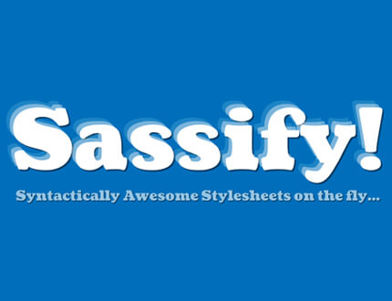
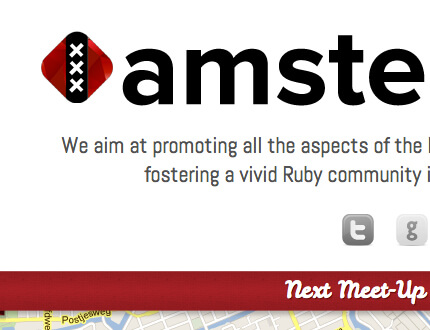
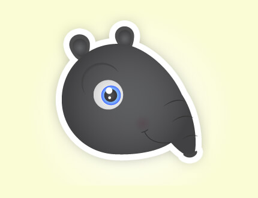
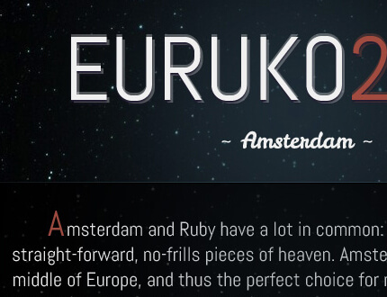

I am available for freelance work! Get to know my skills here, and feel free to contact me when you have any questions!
Awh-Sum Projects Nozzman Pris Roos  Sassify Notificare People do have their colours  Amsterdam-rb  TapirGo! SliceCraft  Euruko 2012 v1 Euruko 2012 v2 Synesthesia Stuff for my songs